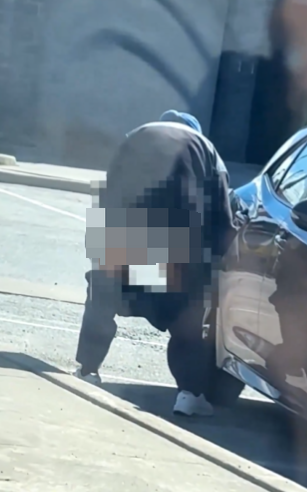
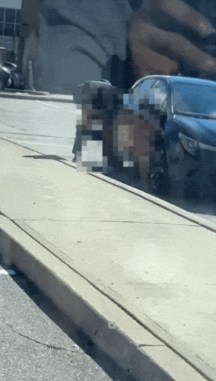
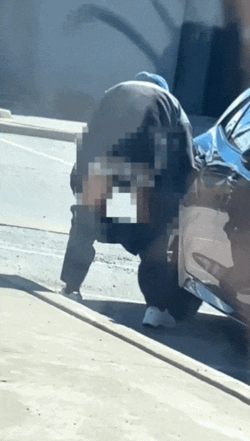
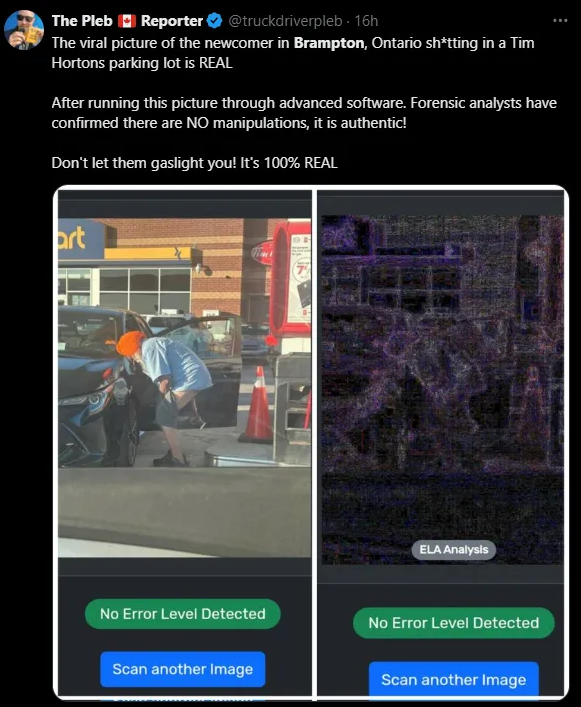

最近的多伦多彻底跟"屎"过不去了！一波接着一波，让人应接不暇，难以承受！
继疯传全网的沙滩大便、加油站大便事件后，宾顿（Bramp）一购物商圈又惊爆有人沿街拉屎！
图源：X
根据6ixBuzzTV发布的视频，一名包头巾的男子在Castle Oaks Crossing Plaza，当街脱下裤子大小便，期间还用自己的手做了一些难以描述的行为...
那画面过于重口味...大家自己看吧！（辣眼睛警告）↓↓↓
图源：X
有眼尖的网友发现，这名男子的车和上一次在加油站排便男子的车，从车型到车牌都一模一样！
图源：X
一些网友认为，多伦多出现了"连环拉屎犯"。而另一些网友则表示，这名男子可能有精神或健康问题。
不过这一次，大家不再争论是否是PS、AI的问题了。因为在上一次的加油站排便事件中，印度裔议员Raj Grewal的一番解释已经沦为了一个笑柄。
当时加油站照片曝出后，Raj Grewal发帖称自己是加油站的业主，该事件绝对没有发生，还斩钉截铁说"照片是PS的，做得更好。"
图源：X
结果网友纷纷发布证据"打脸"！
图源：X
所以，针对这次的Plaza拉屎事件，网友们不再破口大骂，而是开启了嘲讽模式，主打一个"走你的路，让你无路可走"！
↓↓↓
"这条街是我的，这种事并没有发生。"
"这是假新闻。宾顿是我的，员工们告诉我，这种事根本就没有发生过。"
"我拥有这个Plaza，这种事没有发生，这是PS的。"
"我承认这是我做的AI视频。"
"我拥有整个宾顿，这件事没有发生。做得更好。"
言归正传，最近这类事件发生的频率，确实也令人担忧！
有人称在一周内，已经看到4-5个视频了。
还有人爆料，周五在汉密尔顿的Jackson Square商场，有人在美食广场排便。
大家纷纷表示，多伦多已经彻底失控了...
最近的多伦多彻底跟”屎”过不去了！一波接着一波，让人应接不暇，难以承受！
继疯传全网的沙滩大便、加油站大便事件后，宾顿（Bramp）一购物商圈又惊爆有人沿街拉屎！

图源：X
根据6ixBuzzTV发布的视频，一名包头巾的男子在Castle Oaks Crossing Plaza，当街脱下裤子大小便，期间还用自己的手做了一些难以描述的行为…
那画面过于重口味…大家自己看吧！（辣眼睛警告）↓↓↓


图源：X
有眼尖的网友发现，这名男子的车和上一次在加油站排便男子的车，从车型到车牌都一模一样！
图源：X
一些网友认为，多伦多出现了”连环拉屎犯”。而另一些网友则表示，这名男子可能有精神或健康问题。
不过这一次，大家不再争论是否是PS、AI的问题了。因为在上一次的加油站排便事件中，印度裔议员Raj Grewal的一番解释已经沦为了一个笑柄。
当时加油站照片曝出后，Raj Grewal发帖称自己是加油站的业主，该事件绝对没有发生，还斩钉截铁说”照片是PS的，做得更好。”
图源：X
结果网友纷纷发布证据”打脸”！

图源：X
所以，针对这次的Plaza拉屎事件，网友们不再破口大骂，而是开启了嘲讽模式，主打一个”走你的路，让你无路可走”！
↓↓↓
“这条街是我的，这种事并没有发生。”
“这是假新闻。宾顿是我的，员工们告诉我，这种事根本就没有发生过。”
“我拥有这个Plaza，这种事没有发生，这是PS的。”
“我承认这是我做的AI视频。”
“我拥有整个宾顿，这件事没有发生。做得更好。”
言归正传，最近这类事件发生的频率，确实也令人担忧！
有人称在一周内，已经看到4-5个视频了。
还有人爆料，周五在汉密尔顿的Jackson Square商场，有人在美食广场排便。
大家纷纷表示，多伦多已经彻底失控了…